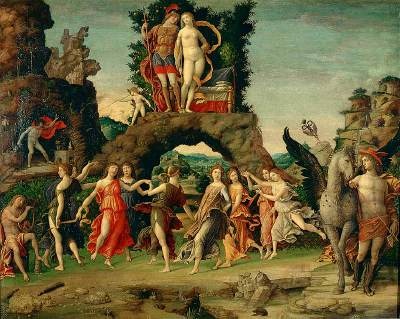

Monday, June the 20th, 2005
back to: title, date or indexes

Here is Andrea Mantegna's painting of the Immortals disporting themselves on Mount Parnassus. He painted it in 1497, so it is not a life study. Nevertheless, if you peer at it very, very closely, you may be able to spot a drop of ichor. If you are too impatient to peer studiously, you will just have to imagine the colourless ethereal fluid coursing through their veins.